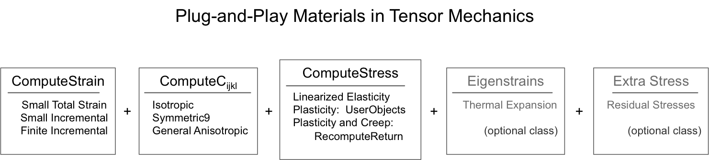

Plug-n-Play System Overview in Solid Mechanics
The solid mechanics materials use a plug-and-play system where the main tensors used in the residual equation are defined in individual material classes in MOOSE. The plug-and-play approach used in the Solid Mechanics module requires at least three separate classes to fully describe a material model.
The three tensors that must be defined for any mechanics problem are the strain or strain increment, elasticity tensor , and the stress . Optional tensors include stress-free strain (also known as an eigenstrain) and additional stress .

Figure 1: Tensors required to fully describe a mechanics material.
At times, a user may need to define multiple mechanics properties over a single block. For this reason, all material properties can be prepended by a name defined by the input parameter base_name.
Strain Materials
The base material class to create strains () or strain increments is ComputeStrainBase; this class is a pure virtual class, requiring that all children override the computeQpProperties() method. For all strains the base class defines the property total_strain. For incremental strains, both finite and small, the compute strain base class defines the properties strain_rate, strain_increment, rotation_increment, and deformation_gradient. A discussion of the different types of strain formulations is available on the Strains page.
For small strains, use ComputeSmallStrain in which . For finite strains, use ComputeFiniteStrain in which an incremental form is employed such that the strain_increment and rotation_increment are calculated.
With the SolidMechanics quasi-static physics, the strain formulation can be set with the strain= SMALL |
FINITE parameter, as shown below.
[Physics]
[SolidMechanics]
[QuasiStatic]
[./all]
strain = FINITE
add_variables = true
[../]
[../]
[../]
[]
Elasticity Tensor Materials
The primary class for creating elasticity tensors () is ComputeElasticityTensor. This class defines the property _elasticity_tensor. Given the elastic constants required for the applicable symmetry, such as symmetric9, this material calculates the elasticity tensor. If you wish to rotate the elasticity tensor, constant Euler angles can be provided. The elasticity tensor can also be scaled with a function, if desired. ComputeElasticityTensor also serves as a base class for specialized elasticity tensors, including:
An elasticity tensor for crystal plasticity, ComputeElasticityTensorCP,
A Cosserat elasticity tensor ComputeLayeredCosseratElasticityTensor,
An isotropic elasticity tensor ComputeIsotropicElasticityTensor.
The input file syntax for the isotropic elasticity tensor is
[./elasticity_tensor]
type = ComputeIsotropicElasticityTensor
youngs_modulus = 2.1e5
poissons_ratio = 0.3
[../]
and for an orthotropic material, such as a metal crystal, is
[./elasticity_tensor]
type = ComputeElasticityTensor
C_ijkl = '1.684e5 0.176e5 0.176e5 1.684e5 0.176e5 1.684e5 0.754e5 0.754e5 0.754e5'
fill_method = symmetric9
[../]
Stress Materials
The base class for constitutive equations to compute a stress () is ComputeStressBase. The ComputeStressBase class defines the properties stress and elastic_strain. It is a pure virtual class, requiring all children to override the method computeQpStress().
Two elastic constitutive models have been developed, one that assumes small strains ComputeLinearElasticStress, and a second which assumes finite strains and rotations increments ComputeFiniteStrainElasticStress The input file syntax for these materials is
[./stress]
type = ComputeFiniteStrainElasticStress
[../]
There are a number of other constitutive models that have been implemented to calculate more complex elasticity problems, plasticity, and creep. An overview of these different materials is available on the Stresses page.
Eigenstrain Materials
Eigenstrain is the term given to a strain which does not result directly from an applied force. The base class for eigenstrains is ComputeEigenstrainBase. It computes an eigenstrain, which is subtracted from the total strain in the Compute Strain classes. Chapter 3 of Qu and Cherkaoui (2006) describes the relationship between total, elastic, and eigen- strains and provides examples using thermal expansion and dislocations.
Eigenstrains are also referred to as residual strains, stress-free strains, or intrinsic strains; translated from German, Eigen means own or intrinsic in English. The term eigenstrain was introduced by Mura (1982):
Eigenstrain is a generic name given to such nonelastic strains as thermal expansion, phase transformation, initial strains, plastic, misfit strains. Eigenstress is a generic name given to self-equilibrated internal stresses caused by one or several of these eigenstrains in bodies which are free from any other external force and surface constraint. The eigenstress fields are created by the incompatibility of the eigenstrains. This new English terminology was adapted from the German "Eigenspannungen and Eigenspannungsquellen," which is the title of H. Reissner's paper (1931) on residual stresses.
Thermal strains are a volumetric change resulting from a change in temperature of the material. The change in strains can be either a simple linear function of thermal change, e.g. () or a more complex function of temperature. The thermal expansion class, ComputeThermalExpansionEigenstrain computes the thermal strain as a linear function of temperature. The input file syntax is
[./thermal_expansion_strain]
type = ComputeThermalExpansionEigenstrain
stress_free_temperature = 298
thermal_expansion_coeff = 1.3e-5
temperature = temp
eigenstrain_name = eigenstrain
[../]
The eigenstrain material block name must also be added as an input parameter, eigenstrain_names to the strain material or SolidMechanics quasi-static physics block. An example of the additional parameter in the SolidMechanics quasi-static physics is shown below.
[Physics]
[SolidMechanics]
[QuasiStatic]
[./all]
strain = SMALL
incremental = true
add_variables = true
eigenstrain_names = eigenstrain
generate_output = 'strain_xx strain_yy strain_zz'
[../]
[../]
[../]
[]
Other eigenstrains could be caused by defects such as over-sized or under-sized second phase particles. Such an eigenstrain material is ComputeVariableEigenstrain. This class computes a lattice mismatch due to a secondary phase, where the form of the tensor is defined by an input vector, and the scalar dependence on a phase variable is defined in another material. The input file syntax is
[./eigenstrain]
type = ComputeVariableEigenstrain
block = 0
eigen_base = '1 1 0 0 0 0'
prefactor = var_dep
args = c
eigenstrain_name = eigenstrain
[../]
Note the DerivativeParsedMaterial, which evaluates an expression given in the input file, and its automatically generated derivatives, at each quadrature point.
[./var_dependence]
type = DerivativeParsedMaterial
block = 0
expression = 0.005*c^2
coupled_variables = c
outputs = exodus
output_properties = 'var_dep'
f_name = var_dep
enable_jit = true
derivative_order = 2
[../]
Extra Stress Materials
Extra stresses () can also be pulled into the residual calculation after the constitutive model calculation of the stress. The extra stress material property, extra_stress is defined in the ComputeExtraStressBase class and is added to the stress value.
An extra stress may be a residual stress, such as in large civil engineering simulations. An example of an extra stress material used in an input file is:
[./const_stress]
type = ComputeExtraStressConstant
block = 0
base_name = ppt
extra_stress_tensor = '-0.288 -0.373 -0.2747 0 0 0'
[../]